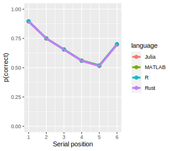
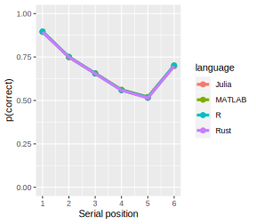

Benchmarking a model of memory
Purpose
This project aims at benchmarking a model of memory using different programming languages. The purpose is to show how fast different programming languages perform under simple, but realistically contrained rules.
The memory model is sufficiently simple to get a gist of what is going on under the shell. These resutls have nonetheless pratical implications for researchers. As the computational resources required to run modern mathematical models dramatically increase, comes the following question: Which programming language should we use to build our psychological models?
Model presentation
The model presented here is a model of short-term or working memory. In short, working memory is our capacity to temporarily store and maintain information over a brief period of time. The model presented is the Primacy Model developped by Pages and Norris in 1998. The model has the following characteristics:
- Each item are encoded into memory following a primacy gradient of activation. The first encoded item receives the strongest activation. The activation received by the subsequent items decreases linearly for each encoding step.
- Items are retrieved based on their activation level, such that highly activated items have a higher probability to be retrieved.
- Selection of retrieval candidates is a stochastic process. This is implemented by adding Gaussian noise to items’ activation level.
- The act of retrieving an item decreases the activation level of subsequent items by some constant proportions.
The original primacy model makes other assumptions not implemented here to keep the model simple.
With this model at hand, we can simulate very simple memory situations. A standard in the memory literature is a case in which people are given a few words to encode (i.e., generaly 6) and are asked to recall them back in their presentation order. People perform surprinsingly poorly in this situation.
Implementation
The model was implemented in Rust, Julia, MATLAB and R. Each implementation is probably subject to enhancement. The whole idea of this project is simply to compare different programming languages using a sensibly similar implementations. For instance, the primacy model could be resumed to a closed-form expression instead of using an unecessarily inefficient simulated versions. But many memory models don’t have a closed-form expression and must be simulated. The current implementation represents an artificial situation for such a case.
Results
 
